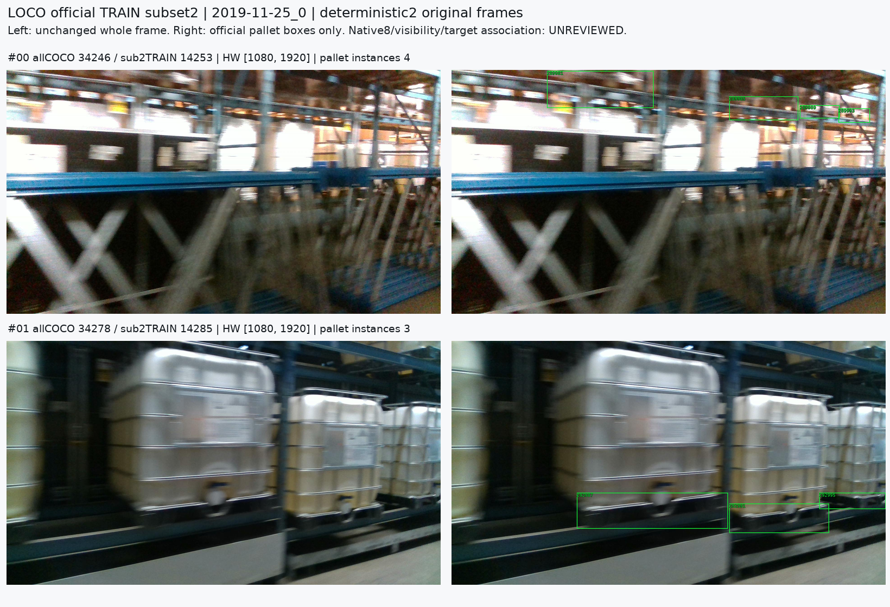
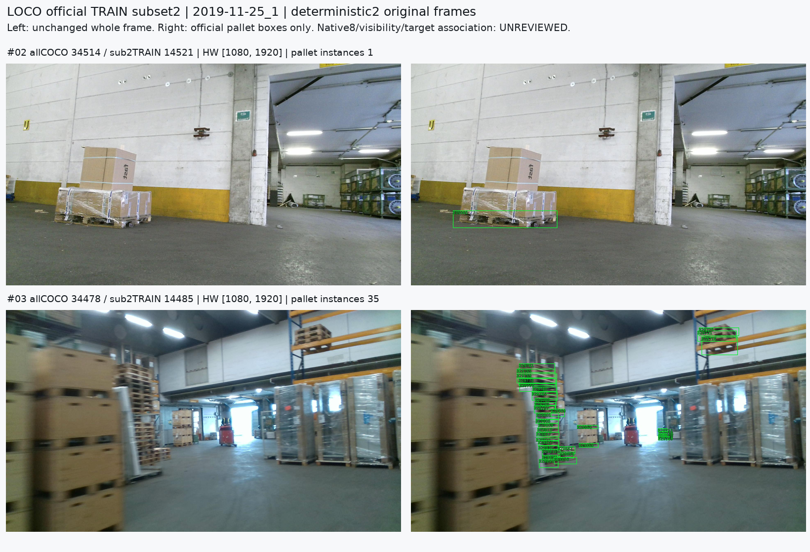
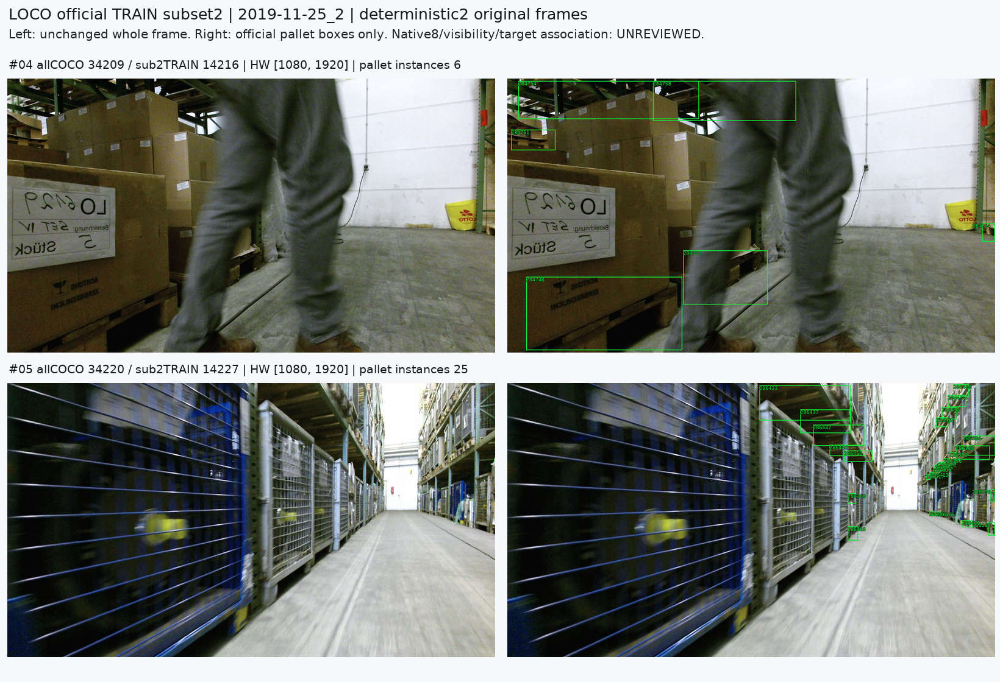
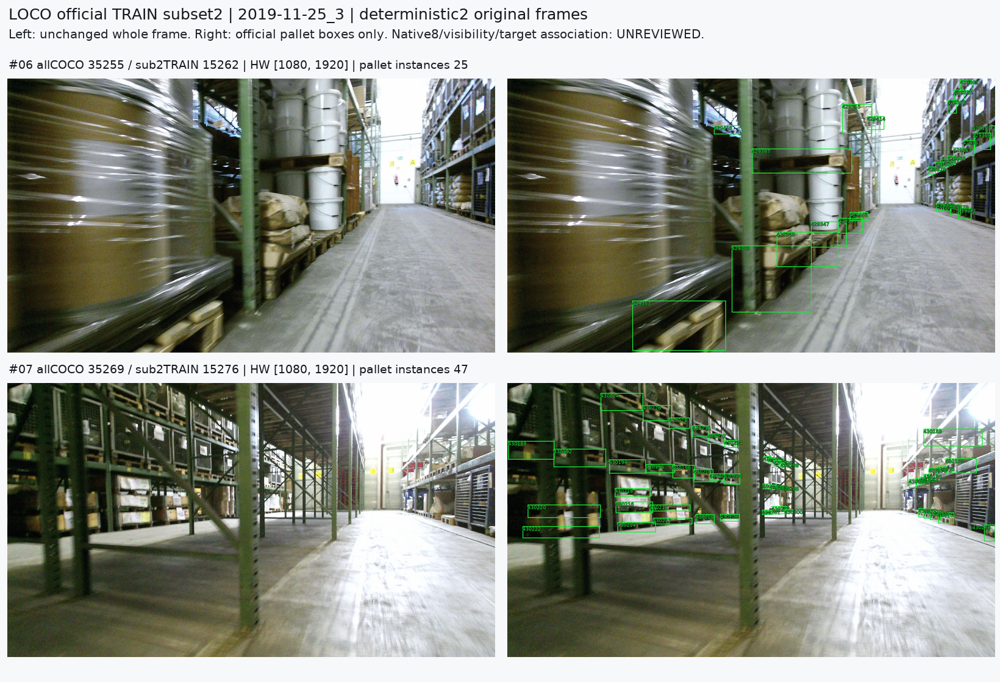
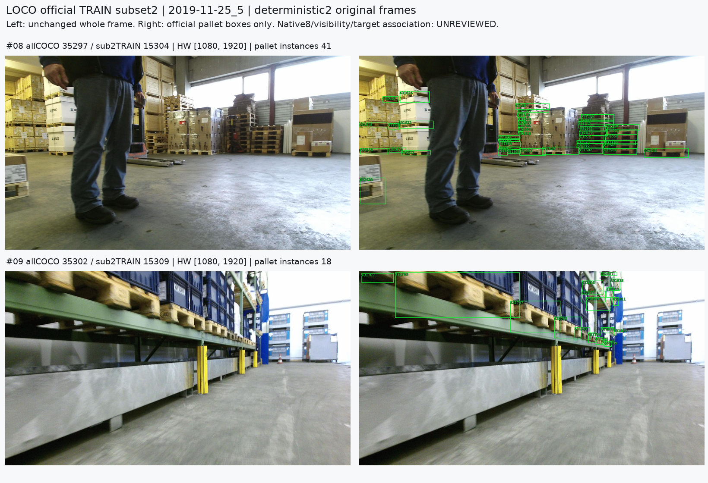
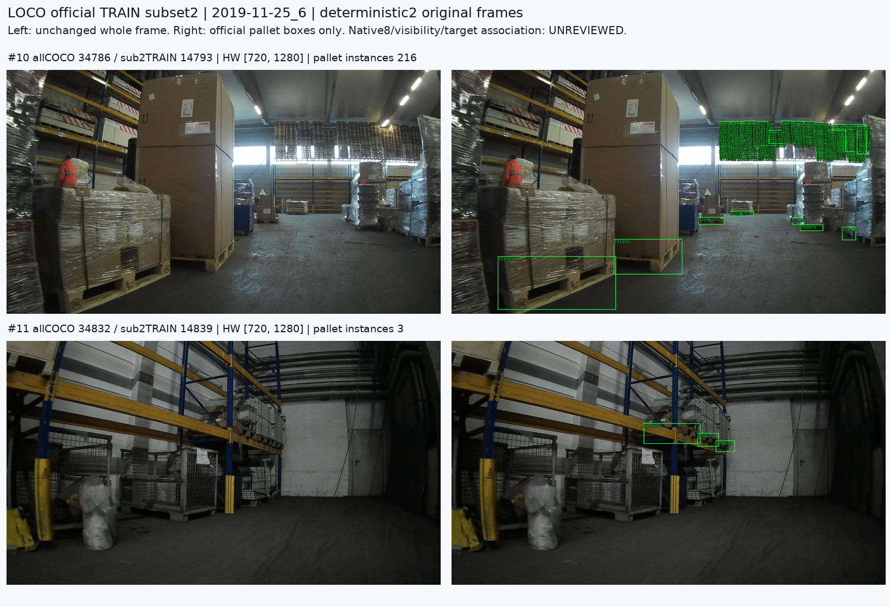

Two SHA-ranked previously unused images per six official TRAIN subset2 date/takes. All remain one official TRAIN environment. Official boxes are instance metadata, not native8 or visibility gold. All96 review placeholders are UNREVIEWED; no initializer/model/nearest mapping used.





